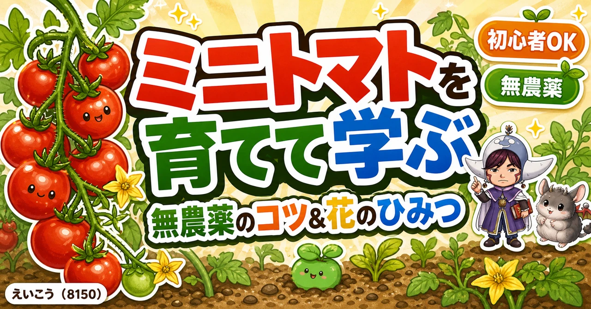
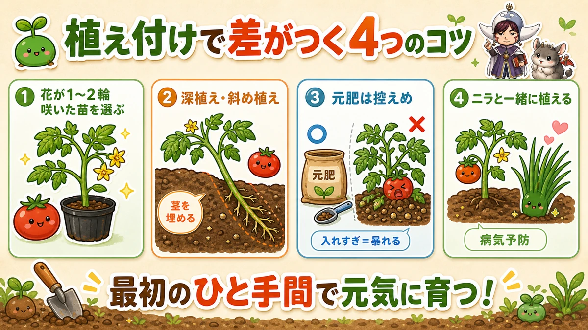
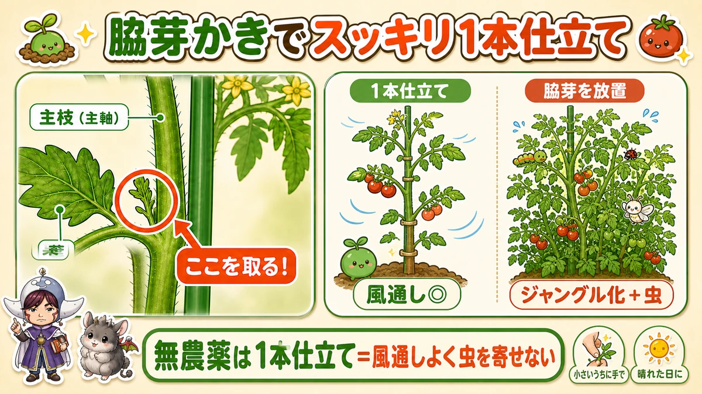
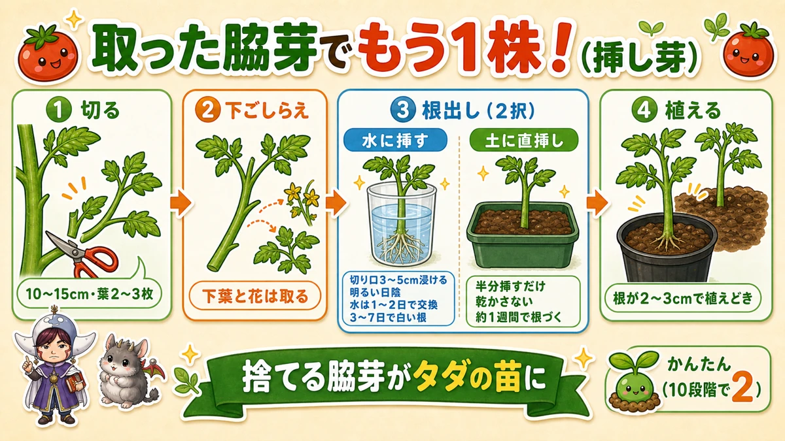
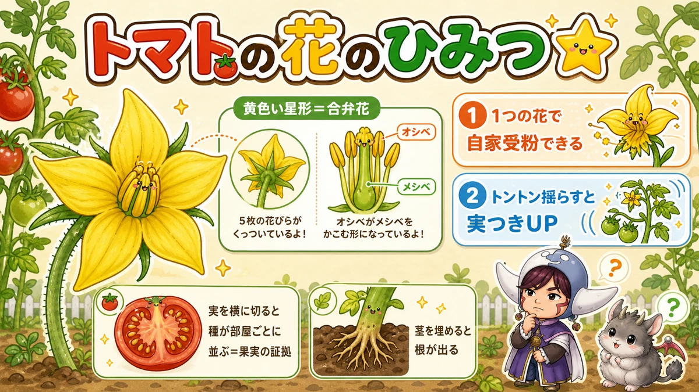

ミニトマトを育てて学ぶ🍅 無農薬の最大のコツと「花のひみつ」

🗨️「トマト、花は咲くのに実がつかへん…」
🗨️「すぐ虫にやられる」
🗨️「無農薬でトマトって、ほんまにできるん？」
どうも、8150（えいこう）です🌱 家庭菜園歴8年、有機・無農薬でやってる、野菜と理科が好きな人間です。
土づくりまで終わったら、いよいよ植える番！ シリーズ「育てて学ぶ家庭菜園」の第1弾は、王道のミニ〜中玉トマトです。
今日は「育てるコツ」だけじゃなく、最後に理科の先生として「トマトの花のひみつ」もお話しします。これ知ると、トマトを見る目がちょっと変わって、育てるのが何倍も楽しくなりますよ☺️
ちなみに、私は農薬を使いません。「無農薬でトマト？」と思うかもですが、大丈夫。コツさえ押さえれば、ちゃんと採れます。
育てる①：苗選びと植え付け
まず押さえる栽培データ
- 科：ナス科（ナス・ピーマン・じゃがいもの仲間。同じ場所は3〜4年あける）
- タネまき：2月中旬〜3月中旬（室内で加温。初心者はここを飛ばして苗からでOK）
- 植え付け：4月下旬〜5月中旬（遅霜の心配がなくなってから）
※時期は中間地（関東〜関西の平野部）が目安。寒い地域は少し遅らせ、暖かい地域は早めに。
まず苗。初心者には中玉トマト（レッドオレ、フルティカなど）がおすすめです。大玉は病気が出やすくて少し難しい。ミニトマトも作りやすいですよ。
苗を選ぶとき、コツが1つ。花が1〜2輪咲いた苗を選ぶこと。じつはトマト、若すぎる苗を植えると「葉や茎ばっかり育って実がつかない」状態になりがちなんです（これ、あとで理科の話につながります）。

植え付けのポイント：
- ナス科を3〜4年あける…トマト・ナス・ピーマン・じゃがいもは同じ仲間。続けて同じ場所に植えると病気が出やすい（連作障害）
- 深植え or 斜め植え…トマトは茎を埋めると、そこから根が出て丈夫になります（理由はあとで！）
- 元肥に肥料を入れすぎない…トマトは肥料が多すぎると「暴れて」実がつきません。最初は控えめ、追肥で補います
- ニラと一緒に植える…ニラの根の菌が、青枯れ病などの土の病気を抑えてくれます。無農薬の心強い味方🌱
育てる②：無農薬の最大のコツは「脇芽かき」
これ、いちばん大事です。無農薬トマトの成否は、ほぼここで決まります。
茎と葉の間からニョキッと出てくる芽を脇芽（わきめ）といいます。これを取るのが脇芽かき。

無農薬でいくなら、1本仕立て（脇芽を全部取って、まっすぐ1本で育てる）がおすすめ。理由はシンプルで、葉を茂らせすぎないためです。
枝葉がジャングルみたいに茂ると、風通しが悪くなって、日陰と湿気ができて…虫の住みかになるんですね。私も昔、脇芽を放置してカメムシだらけにしたことがあります😇 だから、農薬を使わない私こそ、スッキリ1本で。
脇芽かきのコツ：
- 小さいうちに手で取る（大きくなったらハサミで、できれば消毒して）
- 晴れた日にやる（切り口が乾いて、病気が入りにくい）
- ただし生育初期や成長点のすぐ近くは、急いで取らない（株が弱る・形が乱れる）
取った脇芽で、タダでもう1株ふやす（挿し芽）
捨てるはずの脇芽が、無料の苗になります。トマトは茎から根が出る力がとても強く、挿し芽の成功率がめちゃくちゃ高い野菜。難しさは10段階で2くらい、初心者でもほぼ失敗しません。私は毎年これで株を増やしています。

手順はこれだけ：
- 10〜15cmの脇芽を使う…小さすぎると弱く、大きすぎると根が出るまで時間がかかります。10〜15cm・葉が2〜3枚ついたものがベスト。清潔なハサミか手で取ります
- 下のほうの葉と、花・つぼみは取る…水や土に埋まる部分の葉は腐るので取り除く。花やつぼみがあれば摘む（根を出すことに力を集中させるため）
- 1〜2時間、コップの水に浸けて吸わせる…切ってすぐ挿すより活着率が上がります。しんなりした脇芽も、これでシャキッと戻ります
- 根出しは「する」——でも水でも土でもOK（どちらもよく付きます）
- 根が出たらポットや畑へ…最初の3〜4日は直射日光を避け、少しずつ日に慣らしてから定植します
水に挿す（安心・根が見える）…コップやペットボトルの水に、切り口が3〜5cm浸かるように。明るい日陰に置き、水は1〜2日に1回交換。3〜7日で白い根が出ます。根が2〜3cm伸びたら植えどき。
土に直挿し（早い・ラク）…湿らせた土（プランターの土や赤玉土）に半分ほど挿すだけ。トマトは発根力が強いので直挿しでも1週間ほどで根づきます。土を乾かさないのが唯一のコツ。
気温が高い初夏〜夏はとくに付きやすいです。遅い時期に挿した株は収穫も後ろにずれるので、トマトを長く採り続けられるという裏メリットも☺️
育てる③：水やりと「尻腐れ」対策
トマトは乾燥に強い野菜。だから水やりはほぼいりません。むしろ、やりすぎると味が落ちて、病気にもなりやすい。雨除け（上だけ覆う）ができると理想的です。
よくある悩みが尻腐れ。実のお尻が黒くなるやつです。これ、病気じゃなくてカルシウム不足の生理障害。水切れや窒素過多でも起きます。
対策に、私がよくやる無農薬の裏ワザを。卵の殻＋お酢でカルシウム液が作れます。
- 卵の殻1個分を洗って乾かし、細かく砕く
- お酢100mlに入れる（シュワシュワ泡が出ます）
- 1日置いて、濾したら完成
- 100〜300倍に薄めて葉に散布
捨てる卵の殻が、立派な肥料に変身です☺️
学ぶ：えいこう先生の「おうち理科」🔬
理科の時間です。といっても、テストじゃなくて“おうちで楽しむ理科”ですよ☺️ お子さんと一緒にやると盛り上がります。
❓ いきなりクイズ。 トマトの花って、何色か覚えてますか？
…正解は「黄色」。しかも星みたいな形なんです。毎日見てるのに、意外と答えられない人、多いんですよ。

🔍 おうち観察その1： 花をひとつ、そっと分解してみてください。まん中に黄色い筒みたいなのがあって、その中にメシベがかくれてます。花びらは根元でつながってますよね。これを合弁花（ごうべんか）といいます（アサガオの仲間です）。
💡 たね明かし： トマトの花は、1つの花の中にオシベもメシベもそろってて、自分の花粉で実になれるんです（自家受粉）。だからミツバチがいなくても実がつく。「花は咲くのに実がつかへん！」ってとき、花をトントン揺らすと実つきが良くなるのは、これが理由。揺れて花粉が落ちて、受粉が進むんですね。
🔍 おうち観察その2： 完熟したトマトを、ヘタの反対側から“横に”切ってみてください。種が部屋ごとにきれいに並んでます。これは、花の根元（子房）がふくらんで「実（果実）」になった証拠。切り口が宝石みたいで、ちょっと感動しますよ。
🔍 おうち観察その3： 植えてしばらくしたら、土に埋めた茎をそっと掘ってみて。茎から根がニョキニョキ出てます。トマトの茎には「根になる準備をした細胞」がかくれてるから。深植え・斜め植えで根を増やせるのは、これが理由なんです。
🎓 ひとことメモ： トマトは双子葉植物。「花が受粉して実がふくらむ」流れや「果実と種子」は、中学受験の理科でもよく出るテーマ。でも、畑で実物を見た子は強い。教科書よりずっと忘れません☺️
まとめ
ここまで読んでくださって、ありがとうございます！
- 苗は花が1〜2輪咲いたものを、深植えで。ニラと混植で病気予防
- 無農薬の最大のコツは1本仕立て＋脇芽かき（晴れた日に）
- 水は控えめ。尻腐れは卵の殻＋お酢で予防
- トマトの花は黄色い星形・自家受粉。揺らすと実がつく🌟
無農薬トマト、むずかしそうで、コツを押さえれば大丈夫。完熟をひとつ、もいでそのままパクッ。あの味は、育てた人だけのごほうびです🍅
次回はちょっと寄り道。夏休みにぴったりの「親子で野菜収穫体験」へ🧺 全国の“行けるスポット”と、収穫のときに味わえる身近な理科（どこを食べてる？ 実ってどうできる？）をご紹介します。家庭菜園はまだ、という方こそぜひ。